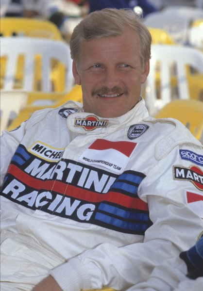

A Group B autóversenyzők között valóban legendás alakok voltak. Néhányan közülük:
Juha Kankkunen: A finn pilóta háromszoros világbajnok, akinek hihetetlen vezetéstechnikája és gyorsasága emlékezetes pillanatokat szült.
Walter Röhrl: A német versenyző, aki rendkívüli vezetési stílusával és versenytapasztalatával kiemelkedett a mezőnyből.
Miki Biasion: Az olasz versenyző két alkalommal nyerte meg a WRC-t, és a Group B időszak egyik legkiválóbb pilótájának számít.
Stig Blomqvist: Egy másik svéd pilóta, aki hatalmas tehetsége révén számos győzelmet ért el a Group B időszakban.
Ari Vatanen: Az 1981-es világbajnok, aki a Group B időszak egyik legikonikusabb alakja lett, különösen az "Osztrák Alpesi Poggyász" videójával.
Michèle Mouton: Bár nem a leggyakoribb dolog egy női versenyzőt említeni a Group B során, Mouton a vezetési készségeivel és kitartásával bizonyította, hogy megállja a helyét a legnagyobbak között.
Ezek az emberek mind hatalmas hatással voltak a versenyzésre és hagyományokat teremtettek a sportágban.
|  | |||||
| Juha Kankkunen | Walter Röhlr | Miki Biasion | Stig Blomvist | Ari Vatanen | Michèle Mouton |